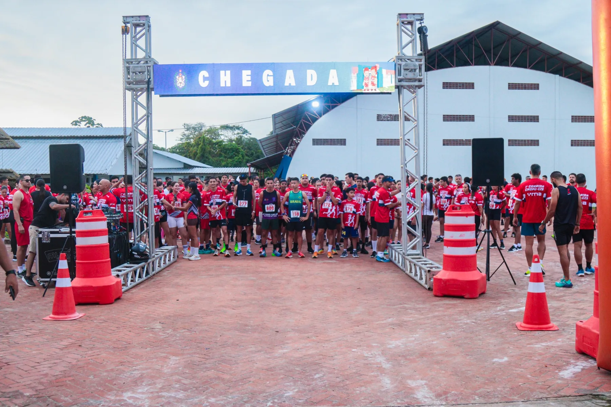
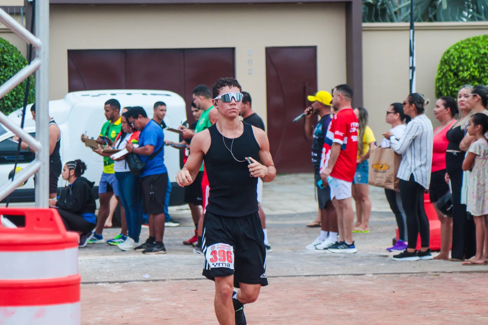
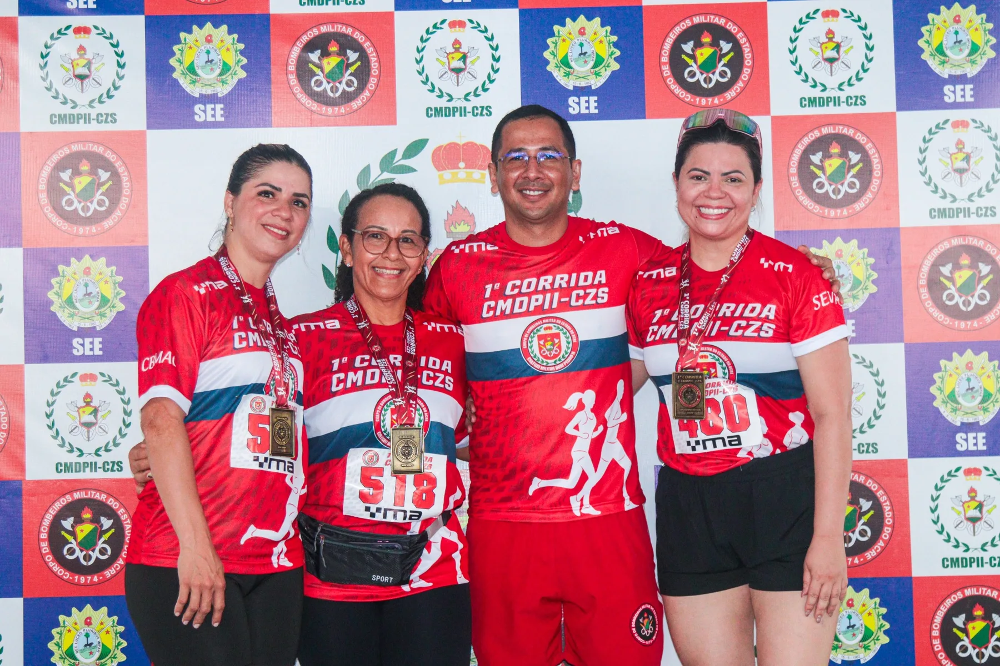
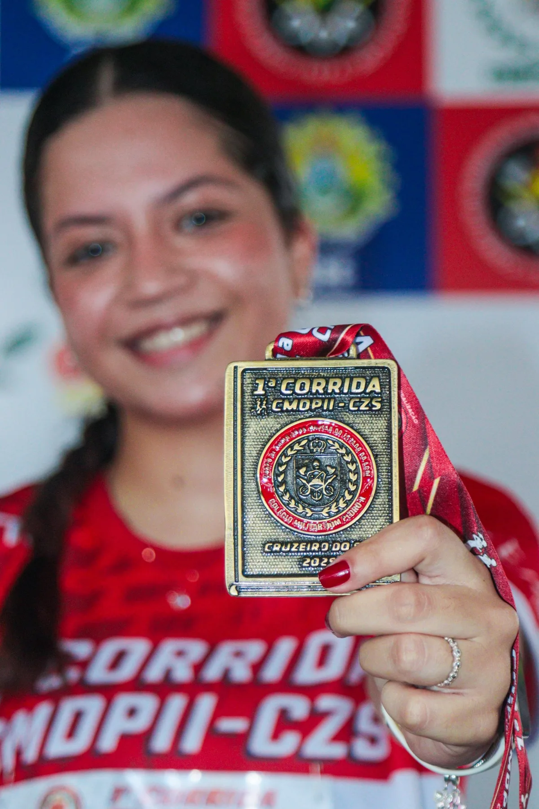

▣
Data e largada22 de novembro de 2026 • largada às 17h
Na inscrição, o participante escolhe explicitamente Regular, AEE ou PCD.
Fotos reais da edição anterior agora fazem parte da identidade da corrida.




O arquivo do percurso já está incorporado ao site. O mapa e a distância oficial continuam sujeitos à confirmação da organização.
Ver percurso →Após a conclusão da prova. A medalha não integra a retirada antecipada do kit.
Um encontro que reúne alunos, famílias, servidores e demais públicos previstos no regulamento.